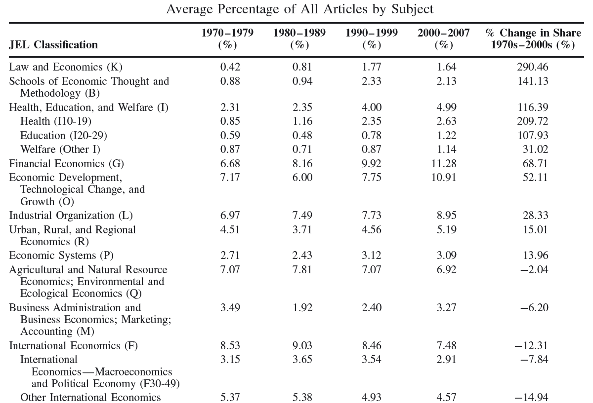

U1. Pensamiento y análisis económico. Historia, métodos y el desarrollo de la economía
Historia del Pensamiento y del Análisis Económico
El rol y utilidad de la HPE
Muchas voces a favor…
“A science which hesitates to forget its founders is lost” [Alfred Whitehead, The Aims of Education and Other Essays (1927)]
“The more perfect the science, the shorter its history” [Jean Baptiste Say, citado en Barber (1997)]
“It is from the scope and wisdom of the economists of the past that we must reap the knowledge with which to face the future” [Robert Heilbroner, The Worldly Philosophers (1953)]
…pero

Algunas razones escuchadas
- Leer a los “clásicos”
- manejaban un conjunto de hipótesis mucho más amplio del que en general ha llegado a nuestros días; cómo piensan las “grandes mentes”
- nos generan “intuiciones” sobre cómo funciona(ba)n los mercados en general
- Pedagógico [Schumpeter (1954)]
- integrar y articular diferentes ideas en sistema de ideas y pensamiento
- Promueve crítica y reflexión
- ante una bifuración, se siguió un camino –¿qué hubiera pasado si…? [costos de transacción y optimalidad paretiana “descubiertos” 30 años después]
El papel de las ideas
…las ideas de los economistas y filósofos políticos, tanto cuando son correctas como erróneas, tienen más poder de lo que comúnmente se entiende. De hecho, el mundo está dominado por ellas. Los hombres prácticos, que se creen exentos de cualquier influencia intelectual, son usualmente esclavos de algún economista difunto. Locos con autoridad, que escuchan voces en el aire, destilan su histeria de algún escritorzuelo académico de uno años antes. Estoy seguro que el poder de los intereses creados es vastamente exagerado cuando se lo compara con el gradual avance de las ideas. No, por cierto, en forma inmediata, pero luego de un cierto intervalo; porque en el campo de la economía y la filosofía política no hay muchos que sean influenciados por nuevas teorías luego de sus veinticinco o treinta años de edad, por lo que las ideas que los funcionarios públicos y políticos, y aun los activistas aplican a los eventos actuales no es probable que sean las últimas. Pero, tarde o temprano, son las ideas, y no los intereses creados las que son peligrosas para bien o para mal
[John Maynard Keynes, Teoría general del empleo, el interés y el dinero (1936)]
Argumentos y contra-argumentos

HPE: tendencias
- Pero esto no es nuevo \(\longrightarrow\) ya en 1960 había señales –Gordon (1965) encuesta principales 40 departamentos de economía en EEUU
- Un 86% de instituciones ofrecen cursos de HPE y está en 7 de cada 10 programas de doctorado
- Casi la mitad han visto una disminución en la oferta y/o requerimientos en los 5, 10 y 15 años anteriores
- Profesores más jovenes serían mas reticentes a (re)contratar profesores en el área
- Sin embargo: hay cada vez más investigación, journals y conferencias en el area de la HPE
HPE: tendencias (cont.)

HPE: tendencias (cont.)
HPE: tendencias (cont.)

¿Está muriendo la HPE (cont.)?
- ¿Why study “the wrong opinions of dead mean”? [Pigou]
- Válido plantearse la utilidad de la HPE para estudiantes y sus futuras carreras
- no es un área vocacionalmente útil –mercado de trabajo, competencias
- el tiempo es un recurso escaso incluso en la formación académica
Graduate students need at least 4 hours a night of sleep; that is a universal law, so something had to give in the economics curriculum
[Paul Samuelson (1988) Out of the Closet: A Program for the Whig History of Science]
¿Está muriendo la HPE (cont.)?
- Blaug (2001) en paper “No History of Ideas, Please, We’re Economists” dice:
Ninguna idea o teoría en economía, física, química, biología, filosofía y aún matemática es completa y detalladamente comprendida excepto como el resultado final de una porción de la historia, el resultado de algún desarrollo intelectual previo…el conocimiento económico es dependiente del camino. Loque conocemos acerca del sistema económico no es algo que hayamos descubierto hoy y ahora, sino que es la suma de todos los descubrimientos, ideas, y arranques falsos en el pasado. Sin Hayek, Robbins y Pigou, no había Keynes; sin Keynes, no había Friedman; sin Friedman, no había Lucas; sin Lucas, no había…
Historia del análisis y de las doctrinas
- Tentacion de reducir la enseñanza a estudiar historia del análisis y dejar afuera las doctrinas –la relación entre teoría y política
- reconstrucciones racionales [Blaug (2001)]
- atractivo mostrar ideas teóricas del pasado y aggionarlas en lingo presente
- eventualmente fútil –si objetivo es usar las herramientas modernas
- reconstrucciones racionales [Blaug (2001)]
Si tu única herramienta es un martillo, tiendes a tratar cada problema como si fuera un clavo.
[Abraham Maslow (1966)]
Historia del análisis y de las doctrinas (cont.)
- Las reconstrucciones históricas requieren mayor compromiso con la indagación
- Hacen a los pensadores menos parecidos a nosotros de lo que eran en realidad
- el progreso en la HPAE es palpalbe cuando los clásicos no tan antiguos reescriben clásicos anteriores!
- La HPAE enseña lecciones clave acerca del desarrollo de las ideas económicas
- la interpretación moderna de “competencia perfecta” de Adam Smith es errónea –no tiene que ver con estructura de mercadao
- la neutralidad del dinero en el LP y la no neutralidad del mismo en el CP para Hume –énfasis en el CP totalmente ignorado por Lucas
Los usos del pasado
“Cada escritor crea a sus precursores” [JLB]
- Esta genial frase de Borges resume una alerta aplicable a la historia de las ideas
- Pensemos en ciertos roles en la historia de la disciplina
- El héroe reconocido que identifica una bifurcación, dramatiza la necesidad de elegir, y persuade a otros a seguir ese camino
- El pensador que se adelanta otros y toma el camino correcto en la bifurcación
- El que escribió antes de que la bifurcación fuera palpable y cuando había indecisión y no había nada para decidir
- La búsqueda de precursores que no influyeron en su tiempo es casi un arte en la disciplina
La conexión entre el pasado y el presente
La influencia de los escritores
- “Su labor modifica nuestra concepción del pasado, como ha de modificar el futuro”, alegaba Borges
- Vemos el pasado a la luz de las obras que más nos han influido y esa luz aplicada en retrospectiva rescata ideas, argumentos e hipótesis y eventualmente hasta puede rescatar una obra completa de la más profunda oscuridad
- Un famoso ejemplo de esto es cuando Keynes resalta los escritos e ideas de Mandeville, Malthus, Douglas y Gessell.
Pensando “afuera de la caja”
- Si uno no puede pensar afuera de la caja, ¿cómo sabemos que estamos en la caja adecuada?
- Conocer los modelos y jugar con los supuestos equivale a reordenar los items en la caja conocida
- ¿Pero conocemos las otras cajas que podrían haber sido?
- Una de las mejores promesas de la HPE es permitir al menos entender cómo y por qué se llegó a esa caja
- Si la caja que hoy vemos es demasiado pequeña y angosta, retroceder ayuda a recuperar vistas perdidas
¿Es la economía una ciencia? Carácter y naturaleza
La acepción de ciencia
- La respuesta es…depende
- de que consideremos ciencia
- Si por ciencia consideramos a la física matemática –como es el caso en muchos paises de habla inglesa y francesa-, entonces todas las ciencias sociales quedan excluidas
- Incluso aún si consideramos ciencia a aquellas disciplinas que usan métodos similares a los de la física matemática, la mayoría de ciencias sociales y gran parte de la economía quedarían excluidas de la definición.
- Si “Science is measurement”, entonces la economía es científica en partes.
La acepción de ciencia (cont.)
- Pero en otra acepción, una ciencia es cualquier campo del conocimiento que ha desarrollado técnicas especializadas de descubrimiento de hechos y de interpretación de inferencia (análisis). Según Schumpeter:
- Ciencia es sentido común refinado
- Ciencia es conocimiento instrumentado (tooled)
- Entonces la economía es una ciencia de acuerdo a esto. Pero…
- escribir la historia de sus técnicas, métodos y problemas no resulta tan directo ni libre de problemas
- un problema, importante y desafiante, es la ideología
- escribir la historia de sus técnicas, métodos y problemas no resulta tan directo ni libre de problemas
Métodos y estándares de la ciencia moderna
- Los estándares científicos modernos son el resultado de un proceso continuo y sostenido durante los últimos 6 (seis) siglos. Durante este tiempo, se han descartado muchos métodos antiguos y refinado otros tantos
- A grandes rasgos estos estándares pueden ser resumidos a partir de 2 (dos) características:
- limitan los hechos aceptables bajo fundamentos científicos a aquellos hechos verificables por observación o experimentación
- limitan los métodos admisibles a aquellos que permitan inferencia lógica a partir de hechos verificables
Observación y experimentación en la investigación
- La verificación por observación es el método más antiguo y tradicionalmente usado, incluso en la antigüedad –a través de observación directa e indirecta.
- En cambio, la verificación por experimentación es más reciente [Galileo, Lavoisier, Pasteur]. Ha sido y es ampliamente usada en las ciencias formales y las ciencias naturales
- mucho menos usada en las ciencias sociales salvo por la psicología
- En la economía recién en las últimas 2/3 décadas ha tomado fuerte impulso por su utilidad para establecer causalidad
- este requiere variación controlada y el método experimental configura un estándar casi ideal para explorar estas cuestiones
Sobre método y naturaleza
- Cierta idea que la economía es comparable a una ciencia natural con progreso acumulativo y que sólo hace falta leer los últimos escritos
- Para entender ventaja comparativa no hace falta leer a Ricardo
- Pero también que la economía no es enteramente como las ciencias naturales…
- la economía progresa no sólo refinando modelos (verticalmente) sino también expandiendo el rango de modelos (horizontalmente)
- La realidad social a diferencia de la realidad física es el resultado de elección humana en su totalidad y por lo tanto inherentemente maleable [Rodrik (2015)]
- modelos diferentes para diferentes tiempos y circunstancias
- la economía progresa no sólo refinando modelos (verticalmente) sino también expandiendo el rango de modelos (horizontalmente)
Sobre método y naturaleza (cont.)
- En 1973, Leijonhufvud escribió en tono de sorna un pequeño artículo donde habló de la “tribu de los economistas” y su obsesión por los modelos
- la práctica de usar y hablar a través de modelos y el énfasis puesto en la modelización explicaba tanto el status del economista y el desdén con que miraban a otras “tribus” –sociología, ciencia política
- Esas observaciones son relevantes 50 años después –el entrenamiento del economista consiste esencialmente en aprender una secuencia de modelos
Sobre método y naturaleza (cont.)
- Para los críticos, esta obsesión por los modelos representa todo lo que está mal con la economía –abstracción de la compleja realidad social, supuestos cuestionables, derivar recetas de política de modelos teóricos hiperestilizados
- En la realidad, los modelos construidos por economistas son absolutamente esenciales para entender el funcionamiento de la sociedad –su simpleza es lo que los hace atractivos
- Lo que los hace útiles es que capturan un aspecto de la realidad
- Lo que los hace indispensables es que capturan el aspecto más relevante de la realidad en un contexto específico
Sobre método y naturaleza (cont.)
Different contexts…require different models. And this is where economists typically get into trouble. They often discard their profession-s most valuable contribution -the multiplicity of models tailored to a variety of settings- in favor of the search for the one and only universal model. When models are selected judiciously, they are a source of illumination. When used dogmatically, they lead to hubris and errors in policy. [Rodrik, Dani. Economics rules: The rights and wrongs of the dismal science (2015)]
Sobre método y naturaleza (cont.)
- Oferta y demanda (Marshall) \(\longrightarrow\) equilibrio eficiente
- idealización: mercado perfectamente competitivo
- Dilema del prisionero (Tucker) \(\longrightarrow\) equilibrio no eficiente
- idealización: acciones independientes
- Caza del ciervo (Rousseau) \(\longrightarrow\) equilibrios múltiples, uno eficiente, otro no
- idealización: información imperfecta
- Ninguno de estos modelos está bien o mal per se –pero cada uno brinda un mecanismo que puede ser válido (o no) en una situación del mundo real
Metodología de la ciencia: evolución. El caso de la economía
Filosofía de la ciencia: los principales modelos
- La filosofía de la ciencia es un campo en el que ha reinado gran agitación desde los 1960s
- Años dorados del positivismo lógico entre 1920 y 1950 –“las ideas recibidas”
- Siguió un período de grandes críticas y cuestionamientos encabezado por Popper, Poliany, Kuhn y Lakatos entre otros
- Conviene comenzar refrescando las ideas detrás del principal modelo imperante a mediados del siglo XIX –el modelo inductivo de la ciencia
El modelo inductivo
- Las investigaciones científicas se inician a partir de la observación de hechos, libre y carente de prejuicios; siguen con la formulación de leyes universales a partir de esos hechos por inferencia inductiva y finalmente llegan a afirmaciones de mayor generalidad, las “teorías”
- Tanto leyes como teorías son sometidos a un escrutinio empírico comprobando la correspondencia de sus implicancias con los hechos
- Este es el conocido como modelo inductivo
El modelo hipotético-deductivo
- Este enfoque y modelo comenzó a ser cuestionado en la segunda mitad del siglo XIX y terminó siendo totalmente opuesto al nuevo modelo en ciernes –el conocido como modelo hipotético-deductivo
- En 1948 este modelo fue formalizado y propuesto como el único tipo válido de explicación en el campo de la ciencia – La premisa principal de que toda explicación verdaderamente científica tiene una misma estructura lógica
El modelo hipotético-deductivo (cont.)
Incluye al menos 1 (una) ley universal, más una delimitación de los condicionantes iniciales relevantes –el explanans- de las cuales se deduce el explanandum que es una afirmación sobre el fenómeno que se busca explicar con la única ayuda de la lógica deductiva. Por ley universal se entiende una proposición del tipo: “en todos los casos en que se da el fenómeno A, se da también el fenómeno B”. Por leyes de la lógica deductiva se entiende el razonamiento por silogismos infalibles del tipo “si A es cierto, entonces B es cierto también; A es cierto, luego B también lo es”. La lógica deductiva es un cálculo abstracto. La verdad lógica del razonamiento no depende en absoluto de la verdad fáctica contenida en las premisas
El modelo hipotético-deductivo (cont.)
- Esto implica equiparar explicación con predicción –la única diferencia es la temporalidad con que se dan
- La explicación es una predicción proyectada hacia el pasado
- Esta correspondencia se conoce como la tesis de la simetría
- Clave del modelo \(\longrightarrow\) sólo emplea reglas de inferencia lógica deductivas; las leyes universales son meras conjeturas (“hipótesis”)
El modelo hipotético-deductivo (cont.)
- Críticos \(\longrightarrow\) la predicción no tiene que implicar explicación y viceversa
- Predicción sólo exige correlación pero la explicación requiere algo más
- Una extrapolación lineal de una regresión lineal constituye una predicción
- Predicción sólo exige correlación pero la explicación requiere algo más
- Implicancia \(\longrightarrow\) se puede predecir bien sin explicar nada [¿machine learning, anyone?]
- Relevancia de la causación \(\longrightarrow\) conjunción constante de dos acontecimientos que aparecen uno (efecto) detrás del otro (causa) en tiempo y espacio [Hume “modelo de bola de billar”]
- Esto ha sido rechazado por no explicitar un mecanismo que conecte causa y efecto
El modelo hipotético-deductivo (cont.)
- Alternativamente ¿podemos obtener explicación sin predicción? La respuesta es positiva
- Ejemplo \(\longrightarrow\) teoría evolutiva de Darwin que busca explicar el desarrollo de formas biológicas más especializadas a partir de una sucesión de formas biológicas menos especializadas por el proceso de selección natural
- Pero no puede predecir qué forma específica adoptarán las primeras
- Ejemplo \(\longrightarrow\) teoría evolutiva de Darwin que busca explicar el desarrollo de formas biológicas más especializadas a partir de una sucesión de formas biológicas menos especializadas por el proceso de selección natural
El modelo hipotético-deductivo (cont.)
De acuerdo a esta concepción, la teoría de la gravedad de Newton –los cuerpos se atraen con una fuerza que varía inversamente con el cuadrado de sus distancias- no es mas que un instrumento altamente eficiente para generar predicciones aproximadamente correctas para todos los efectos prácticos dentro del sistema solar pero que sin embargo no logra explicar el movimiento de los cuerpos. De hecho Newton no proporcionó mecanismo causa-efecto ni tampoco lo han hecho miles de investigadores que sucedieron a Newton
El falsacionismo de Popper
- Popper encabeza una revolución asentada entre su distinción entre ciencia y no-ciencia y termina en su intento de establecer normas que permitan evaluar las hipótesis científicas en términos de su diferente grado de verosimilitud
- Problema de justificación de la inducción \(\longrightarrow\) generalizamos constantemente a partir de observaciones individuales; sin embargo estas inferencias no tienen una justificación lógica
- famoso “problema de la inducción”
El falsacionismo de Popper (cont.)
- Asimetría clave entre inducción y deducción; entre verificación y falsación
- cualquier afirmación universal puede ser refutada por medio de la lógica deductiva por una sóla afirmación particular pero…
- no es posible derivar afirmaciones universales a partir de afirmaciones particulares aún por muchas que estas sean
- cualquier afirmación universal puede ser refutada por medio de la lógica deductiva por una sóla afirmación particular pero…
Ningún número de observaciones acerca de que los cisnes son blancos nos permitirá inferir que todos los cisnes son blancos, pero la observación de un único cisne negro, nos permite refutar aquella conclusión
El falsacionismo de Popper (cont.)
- Popper demarca asi la linea entre ciencia y no-ciencia
- ciencia se caracteriza por su método de formulación de proposiciones contrastables (y no por su contenido ni su pretensión de certeza)
- Esta línea no es absoluta: hay todo un continuo de conocimientos que pueden ser clasificados según la nomenclatura popperiana
- la economía (como ciencia social) queda entre medio de las ciencias naturales y las disciplinas como las artes y la literatura
Problemas metodológicos centrales
Problemas metodólogicos centrales
- Economía positiva versus normativa
- Razones versus causas
- Naturalismo científico-social
- Abstracción, idealización y las cláusulas ceteris paribus
- Causalidad en economía y econometría
- Estructura y estrategia en economía: paradigmas y programas de investigación
Economía positiva vs normativa
- Contraste entre una ciencia positiva que estudia “los hechos” y una indagación normativa acerca de los valores y de lo que “debería ser”.
- Gran mayoría de economistas creen que existe una línea clara entre hechos y valores, entre lo que es y lo que debería ser
- Varios problemas y cuestionamientos a esto
Economía positiva vs normativa (cont.)
- Economistas deben interpretar y articular las incompletas especificaciones de objetivos y restricciones provistas por el policy-maker
- La ciencia económica concierne la actividad humana y como toda actividad humana está enmarcada en valores [diferentes valores en economistas vs policy-makers
- Gran parte de la economía construida alrededor de una teoría normativa de racionalidad
- Las opiniones individuales sobre lo que está “bien” o “mal” están influenciados por sus creencias acerca de cómo se comportan los individuos
- Los opiniones y juicios individuales están influidos por el propio interés –posible sesgos metodológicos
Razones versus causas
- Frecuentemente los economistas construyen teorías que ofrecen: 1) explicaciones causales acerca de porqué los individuos eligen como eligen; 2) relatos sobre las razones detrás de sus elecciones
- Las explicaciones en términos de razones tienen ciertas diferencias con las explicaciones en términos de causas.
- Las razones pretender justificar las acciones que explican sin pretensión de explicarlas
- Davidson [1963] dice que “lo que distingue las razones que explican una acción de las razones que fallan en explicarla es que las primeras son también causas de la acción”
Razones versus causas (cont.)
- Otro problema: las creencias y preferencias que explican las acciones suelen depender de errores e ignorancia
- la abstracción ayuda a simplificar –información perfecta
- De esta manera, los economistas no se preocupan por como son las creencias y preferencias
- surgen problemas cuando agregamos realismo
- las elecciones pasan a depender de lo que la gente cree (“beliefs”)
- surgen problemas cuando agregamos realismo
- Ejemplo –bolsa de valores, precios de viviendas durante burbuja inmobiliaria
Naturalismo científico-social
- La economía es la que más se asemeja a las ciencias naturales
- Tres cuestiones centrales para reflexionar
- ¿Hay diferencias fundamentales entre la estructura o conceptos de teorías y explicaciones entre la economía y las ciencias naturales
- ¿Hay diferencias fundamentales en los objetivos de ambos tipos de disciplinas? Ciencias naturales foco en objetivos explicativos y predictivos; economía además foco en “entender” [Weber (1904)] –fuerte elemento de subjetividad
- ¿Debido a la relevancia de las elecciones humanas, son los fenómenos sociales demasiado irregulares para ser capturados en un marco analítico de leyes y teorías?
Abstracción, idealización y las cláusulas ceteris paribus
- Economía suele ser criticada por la fuerte dependencia de la abstracción e idealización (racionalidad e información perfectas)
- Por otro lado, sin una buena dosis de abstracción e idealización, resulta difícil con todas las complicaciones del mundo real
- ¿Cuánta abstracción, simplificación, e idealización es legítima?
- Los enunciados y conclusiones de la economía son verdaderos estrictamente bajo la cláusula ceteris paribus - ¿cuán validados están estas abstracciones y supuestos por la evidencia empírica disponible?
Causalidad en economía y econometría

¿Acaso la gaviota dobló la barra?
Causalidad en economía y econometría (cont.)
- Muchos enunciados económicos se asemejan a enunciados causales –“Cuando sube \(P\), baja \(Qd\)”
- Pero causalidad no explorada explícitamente (ni conceptual ni estadísticamente)
- Reciente revolución empírica rescató el tema de la causalidad
- Si cambios en \(M\) causan cambios en \(P\), entonces la distribución condicional de \(P\) sobre \(M\), \(P(M|P)\) debería permanecer estable con cambios exógenos en M, pero debería cambiar con cambios exógenos en \(P\)
- Hoover [2001] propone usar indagación histórica junto a métodos estadísticos para identificar cambios exógenos
¿Es importante la causalidad en economía?
- Claro que sí! Ya estos temas aparecían en los escritos y preocupaciones de Hume, Smith y otros autores.
- Hay varias razones por las que estudiar y determinar causalidad es relevante
- Conocer y atacar las verdaderas causas de un problema (y no sus efectos) –i.e inflación
- Teorización y modelización
- Diseñar políticas e intervenciones correctas
- Distinguir entre fenómenos que tienden a ocurrir conjuntamente –corelación- y fenómenos que causan unos a otros –causalidad
La experimentación en economía
- Reencarnación moderna del debate de causalidad \(\longrightarrow\) randomized controlled trials
- experimentos que consisten en aleatorizar individuos en 2 (dos) grupos –tratamiento, control- y variar 1 (un) sólo factor entre grupos
- en este contexto, la variación en los resultados dadas las características similares de ambos grupos, se deben totalmente a al factor
- experimentos que consisten en aleatorizar individuos en 2 (dos) grupos –tratamiento, control- y variar 1 (un) sólo factor entre grupos
- Problema \(\longrightarrow\) representatividad –i.e si paper para tribus de región de Uganda concluye algo sobre conflicto y violencia, no necesariamete aplica para pandillas mejicanas
- Cuestiones éticas sensibles \(\longrightarrow\) experimentación en/con humanos
Estructura y estrategia en economía: paradigmas y programas de investigación
- ¿Existe alguna estructura teórica que guíe y unifique la investigación en economía?
- Economistas teóricos se acogen al marco de Kuhn y Lakatos con motivo de mostrar una idea de unicidad y estructura de la estructura económica
- En cualquier caso, la comparación de la estructura económica al marco de Kuhn y Lakatos ha echado alguna luz sobre las ventajas y deficiencias de la estructura y estrategia de la teoría económica –i.e equilibrio existe y se logra